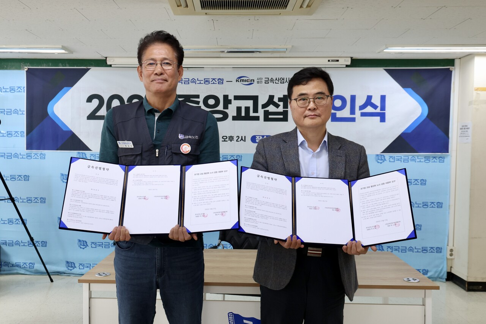

Executive Summary
A clause telling employers to settle it with the union before AI comes into the workplace has been written into a collective agreement. On October 27, at the signing ceremony for the 2026 central bargaining round in Korea's metal industry, the Korean Metal Workers' Union and the Korea Metal Industry Employers' Association signed an industry-wide agreement carrying a new clause on protecting labor rights and employment when AI is adopted. Whether the AI runs a process or manages people, the employer has to tell the union first. If the union asks, both sides work out together how it will change jobs and the terms people work under. Only once they have agreed on the measures can it go in. This article looks at the procedure the clause requires and at where that requirement parts from Korea's AI Framework Act as it now stands.
What goes furthest is that the clause settles in advance which side does the explaining when a dispute arises. Use AI in an HR action and its standards and its procedure have to be made public, and if someone calls that action unfair, the employer is again the side that has to produce reasonable grounds. The AI Framework Act, in full force since January, does count judgments that weigh on a person's rights and duties, hiring among them, as high-impact AI, and it does require a plan for explaining them. What it never settled is who has to prove the case once a dispute actually starts. Sixty-nine companies have to follow it. In the members' ballot 86.4% voted in favor, and what that vote ratified was the whole bargaining round, not the AI clause on its own.
Sections 1 through 3 follow the clause as it was made public at the signing, the law as it stands, and the amendment bills now before the National Assembly. Sections 4 and 5 ask what an HR AI was taught on and what yardstick it scored people by, and how much of that still has to be on hand for the clause to be met. Those two sections are this article's interpretation.
Key Numbers
Four figures come out of the agreement and the Act together: the number of member companies it catches at once, the vote the members cast, the span the law names in its own text, and one provision the law does not have.
Source: Media Today and Maeil Labor News
69
Member companies covered at once
One round of industry-level bargaining reaches all of them together
86.4%
Yes vote in the members' ballot
Ratified over four days of voting, October 12–15
Up to hiring
How far the AI Framework Act names high-impact use in employment
The Act's text does not name assignment, appraisal, promotion or discipline
None
Burden-of-proof provisions in the AI Framework Act
Only the agreement puts that duty on the employer when a worker objects
What the Two Sides Signed
The signing ceremony for the 2026 metal industry central bargaining round was held on October 27 at the Korean Metal Workers' Union offices in Jeong-dong, Jung-gu, Seoul. Park Sang-man, president of the Korean Metal Workers' Union, and Park Geun-hyung, chair of the Korea Metal Industry Employers' Association, signed the metal industry agreement, and that agreement carries a new clause on protecting labor rights and employment when AI is adopted. It applies to the 69 member companies of the employers' association. TK Elevator, Lotte Energy Materials, DAS, Keyang Electric Machinery and Winia are among the names on that list.

The members' ballot ran for four days, from October 12 to 15, and the result was ratified with 86.4% in favor. The AI clause was not the only item put to that vote. The same bargaining round settled an ordinary hourly wage of 10,830 won, a rise of 3.93% that runs ahead of the 3.68% statutory minimum wage increase. The 86.4% ratified the central bargaining result as a whole, with that settlement bundled in.
The union described the clause as a device inside the collective agreement to keep AI adoption from harming employment and working conditions at the workplace. It also set the clause down as the first supra-enterprise industrial agreement in Korea to compel labor-friendly use of AI. Unlike a promise struck company by company, this one is made once at the level of the industry and binds every member company at the same time.
Bargaining was not smooth. The employers' side brought an AI proposal to this round for the first time, but the union replied that the proposal narrowed what counts as AI and ran against the intent of its own demand, and that it could not be accepted. The employers' proposals ran to a fourth version, and the union denounced that fourth proposal as industry-centered with labor left out. The wording that stands now came after that much argument over how far the word AI reaches.
The place where one side pushed to narrow the scope and the other to widen it says what kind of clause this is. It does not tell employers not to use AI. It tells them to say what they are using before they use it, and to confirm together how that thing touches people's jobs and working conditions. The fight was not over whether to use AI but over what gets called AI and how much of it has to be put on the table.
The AI Enters Only After the Union Has Agreed
The clause splits what an employer has to do before bringing AI into work processes or HR management into three steps. First, notify the union in advance. Second, if the union asks, examine jointly what the adoption will do to employment and working conditions. Third, adopt on the premise that both sides have agreed on measures covering employment, training, industrial safety and personal data protection.
Duties remain after adoption. Information the AI collects and supplies has to be disclosed, and where AI is used in an HR action, the standards and the procedure behind it have to be disclosed openly. Where a worker argues the action was unfair, the duty to present reasonable grounds falls on the employer. Member companies agreed to carry the principle into supplementary workplace agreements, and where an existing agreement already holds a stronger protection, not to roll it back. The two sides also asked the government to extend the force of this agreement to other industries, sectors and regions.
Put the three steps in one line and the moment of adoption moves back. Company AI adoption has until now run through technical review and budget approval into operation, with problems handled as they came up. This clause places one stopping point before operation begins, and at that point an answer has to be ready if the other side asks for one.
Where the AI Framework Act Has Not Reached
Korea already has a law that demands AI be explained. The Framework Act on the Development of Artificial Intelligence and the Establishment of a Foundation for Trust, the AI Framework Act for short, came into full force on January 22 this year. It groups AI used in decisions that bear heavily on people's rights and duties as high-impact AI, and tells those businesses to draw up and run a plan for explaining the final result, the main standards that produced it and an outline of the training data. A user who disputes a result can ask for an explanation and ask for a human review. A breach does not bring an immediate fine. It goes through a fact-finding inquiry and a corrective order, and a fine of up to 30 million won follows only where the order goes unmet.
So the demand for an explanation did not first appear in this agreement. What parts is narrower than that. The examples the Act writes into its text as high-impact AI are hiring and loan screening. Everything from the job posting to the final selection reads as falling inside that example, but assignment and work allocation after the hire, performance appraisal, promotion and discipline are not named in the text, so whether they are covered is unclear. That is also where Korea parts from the EU AI Act, which names the whole span of employment as high-risk.
The National Assembly has already pointed at this empty place. On July 21, Representative Jeon Jong-deok introduced an amendment to the AI Framework Act bringing AI-based HR management systems inside the scope of high-impact AI, and said in introducing it that job assignment, work allocation, performance appraisal, promotion and HR management after the hire are not among the covered uses, leaving a blind spot. As of late October that bill is still pending. A similar design is moving separately in the public sector. Around the October audit of the government, Representative Choi Hyuk-jin introduced an amendment to the Act on the Management of Public Institutions requiring public institutions to assess the employment effect before adopting AI. Private workplaces through bargaining and the public sector through legislation are pushing the same design, a review before the fact, along two different routes at much the same time.
Scope is not the only place the two part. There are two more. One is the moment at which an explanation is asked for. The right to an explanation the Act grants is used after a result arrives, by a user who disputes it. The agreement puts it earlier, with both sides examining the adoption before it is decided. The other is the side that has to produce grounds. No provision in the Act settles that, and the agreement fills the space with the employer. Set the agreement and the Act side by side and the squares that overlap show up along with the ones left empty.
| Item | AI Framework Act (in full force January 22) | Metal industry agreement (signed October 27) |
|---|---|---|
| Decisions covered | Hiring, loan screening and other decisions bearing heavily on rights and duties | Work processes and HR management across the board |
| Assignment, appraisal, promotion and discipline after the hire | Not named in the text, so coverage is unclear | Covered, as part of HR management |
| When an explanation is asked for | After a result arrives, by a user who disputes it | Before adoption, with both sides examining it together |
| When an objection is raised | No provision names the side that has to produce grounds | The employer presents reasonable grounds |
| Who it binds | Every business handling high-impact AI | 69 member companies, carried into supplementary workplace agreements |
The law column follows the text of the Act and how it has taken effect; the agreement column follows the clause as made public at the signing. Whether the area after the hire is covered is a question on which readings differ, and settling that reading in law is what the pending amendment is for.
In other countries this order ran the other way. Germany amended its Works Constitution Act to give works councils rights to information, consultation and codetermination around AI adoption, and IG Metall, the German counterpart of the metal workers' union, set up a working group on algorithmic management with the labor and social affairs ministry in 2023. At companies such as Volkswagen and Bosch there are clauses piloting an assessment of what generative AI does to training and skill levels. The law laid the ground first and agreements filled in the detail on top of it. In Korea a square the law has not yet reached was filled first by an agreement between the two sides.
What Has to Survive for an Employer to Give Grounds
Read the clause from the company's side and the work splits three ways: explaining the effect before adoption, disclosing the standards and procedure behind an HR action, and showing why one case came out the way it did when an individual worker objects. All three ask for the same thing in the end. What the decision looked at has to still be there later.
A demand to disclose standards and procedure reads easily as a demand to open up the structure of the model, but what actually has to be answered sits earlier than that. Which items went in as inputs when the score was produced, who recorded those items and by what standard, and when the record was collected come first. For a model trained on attendance records and performance review histories, the year those reviews were given and the guidance they were given under becomes the model's standard. Where material from a year in which the guidance changed is mixed in, the model learns two standards at once.
Grounds for a single case are harder. What a worker who argues their assignment was unfair needs is not the overall average but the input values the model saw for that person and the direction those values pushed the result. A system in production that does not keep inputs and outputs stored as pairs cannot manufacture this answer after the fact. It is harder still once the model has been replaced. Without a record of which version was running at the time, there is nothing left to reproduce.
Timing is a problem too. The joint review happens before adoption. That means explaining what the effect on employment and working conditions will be before a single line of operating log exists. What can be held in hand at that point is where the training data came from and how much of which group is in it, and how a run over past material split across groups. Both are prepared on the data side before the model is switched on, not obtained by asking the model.
The AI many companies use in HR was bought rather than built. Screening, assignment recommendation and attrition prediction often arrive bundled into an HR system. The agreement places the duty to explain on the company adopting the function, not on the company that built it. Where the vendor does not disclose the training data and the scoring standards, the side that cannot explain is the company that adopted it.
Why Pebblous Is Watching This Agreement
Collective bargaining is not what Pebblous does. What this clause asks for, though, ends up being a data question. What material the model learned from, when and under what standard that material was recorded, and whether a decision about one person can be pulled back out. Treat explainability as a property of the model and the answer looks as though it sits inside the model. The side actually holding the answer is the lineage of the data.
Had this demand arrived as regulation, it would have arrived with an effective date and a grace period. Arriving through bargaining, it can be raised by the other side at any time. The moment the union asks is the moment an explanation is due, and that moment cannot be known in advance. In that it leaves no separate stretch of time to put an answer together once the question lands, this route is the tighter of the two.
Whether the clause stops at 69 companies in the metal industry is not yet known either. The request to the government to extend its force came from the employers' association as well as the union, and the same principle gets written down once more at the level of each member company's workplace. If there are unions outside the metal industry ready to put the same wording on the table at their next round, the preparation has to be finished before an agreement is struck rather than after.
Four things are worth checking if you are using AI in HR or planning to.
- Are the source and the collection date of the training material written down. Without a record of which year and which review guidance a rating was given under, there is no way to explain the standard
- Are the inputs and the result of an individual decision stored as a pair. Asked for grounds on one case, the only thing you can put forward is the record of that one case
- Is there a record of model replacements and retraining. Not knowing which version was running when leaves no way to pull a past decision back out
- Can the training data and scoring standards of a bought-in function be demanded in the contract. Where the current contract carries no such term, the next opening to ask for one is the renewal
None of the four has anything to do with model performance. They are the items that would read the same after swapping in a better model, and they are the hardest to build in late, once adoption is done. That is likely where the reason sits for the stopping point the clause places before adoption.
Thank you for reading this far. The clause and the facts of the signing were checked against each other across the reports that carried them, and we worked at not writing down wording from provisions that have not been made public. If you use AI in HR or in assigning work, it is worth taking one decision from last month and testing whether you can pull it back out and give grounds for it now. We would be glad to hear where it got stuck.
Pebblous Data Communication Team
October 29, 2026
References
Primary Reporting
- 1.Kim, Y. (2026). "AI 도입땐 보호대책 노사합의 먼저…국내 첫 AI 초기업 단협 나왔다." Media Today, October 27.
- 2.Lee, J. (2026). "'AI 도입시 노사 협의' 금속산업 중앙교섭 조인." Maeil Labor News, October 28.
Official Legislation
- 3.National Assembly of the Republic of Korea. (2025). Framework Act on the Development of Artificial Intelligence and the Establishment of a Foundation for Trust. National Law Information Center. In full force since January 22, 2026.
Pending Legislation
- 4.Energy Daily. (2026). "AI 인사관리도 '고영향 AI' 포함 추진… 전종덕 의원, AI기본법 개정안 발의." July 21.
- 5.Energy Daily. (2026). "공공기관 AI 도입 전 '고용영향평가' 의무화 추진…재교육·재배치 연계." October.